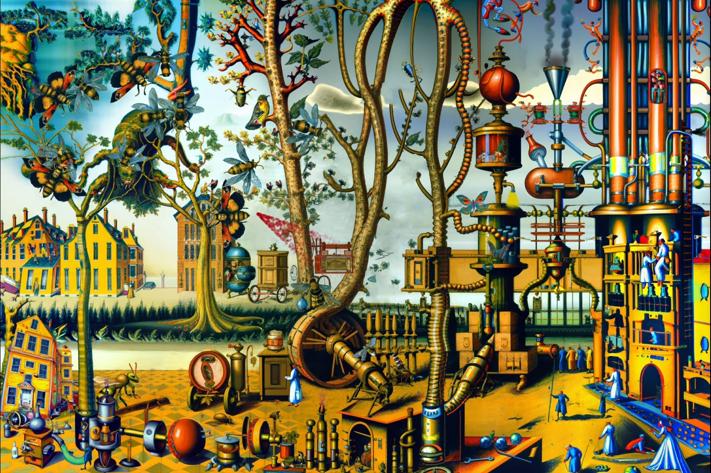
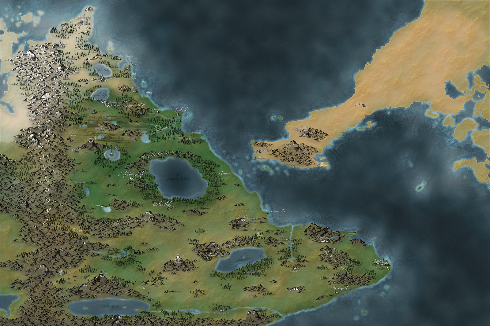
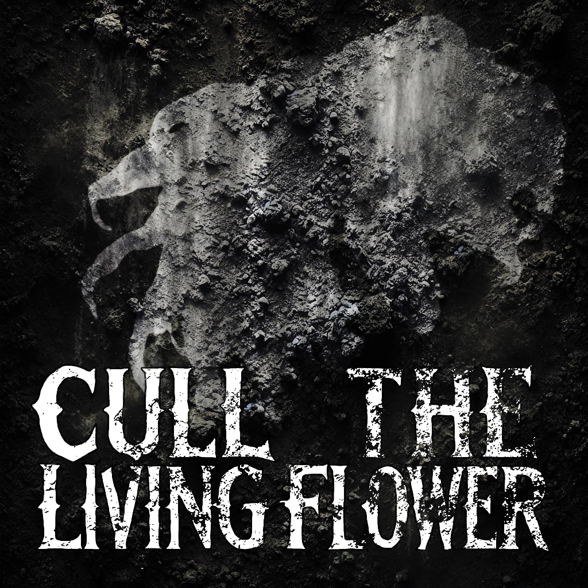

What Remains?
Experimental digital narrative exploring grief, mental illness, and memory through interactive media and glitch art.

A concise record of awards, nominations, exhibitions, roles, and music projects.

Experimental digital narrative exploring grief, mental illness, and memory through interactive media and glitch art.
Poetic interactive work reflecting on isolation, domestication and environmental collapse.
I do not have video of this, but Hanna Lauvli PhD candidate at the CDN and the Digital Culture Student Comitee can all testify
The ELO awards is one of the biggest recognitions within the field of electronic literature

A polisatirical work featuring a fake desktop experience detailing the rancid exprience of being queer on X during the Trump era

Presented among leading works in interactive digital storytelling.
Featured with lots of impressive works from current and past Students of UiB
Generative, multimedia exploration of narratives in AI.

Contributed to experimental web artworks, interactive literature, and creative code prototypes. Focus areas included generative design, narrative systems, and multimedia interaction.
Creation of Spots (Advertisment), editing of interviews, sometimes filling in for voice over
Learnt the inns and outs of all things technology. From history, to coding, to creative practice and societal evalutaion.
The World of Aritéa is a world that is slowly being consumed by a mist that defragments that which it touches. The world consists of 6 distinct races who have philosophies and complex webs of political reltations
This world is a homebrew world based on the Dungeons and Dragons 3.5 and 5th edition which encapsulates a large scale war for Pneumatic Energy that threatens to change the dynamic of magic forever.

Crossroads uses paths as a way to visualise choices within the game which by the end shoould look like a tree of branches or a splitting road. Each path is distinct and every time you make a choice you gain marks that describe what you did, what you gain or lost and what you left behind
The book takes place in an alternate reality version of Aritéa where the mist is spreading fast and wide. As our protagonist wander the wastes and comes across a band of scavenger who he joins. Drama ensues.

This TTRPG aims to simulate the rough experience of surviving a post-apocalyptic wasteland with mechanics for food, thirst, fatigue, repair, disease and so much more. It is class agnostic and uses a perks system to create characters over time that are wholly unique


